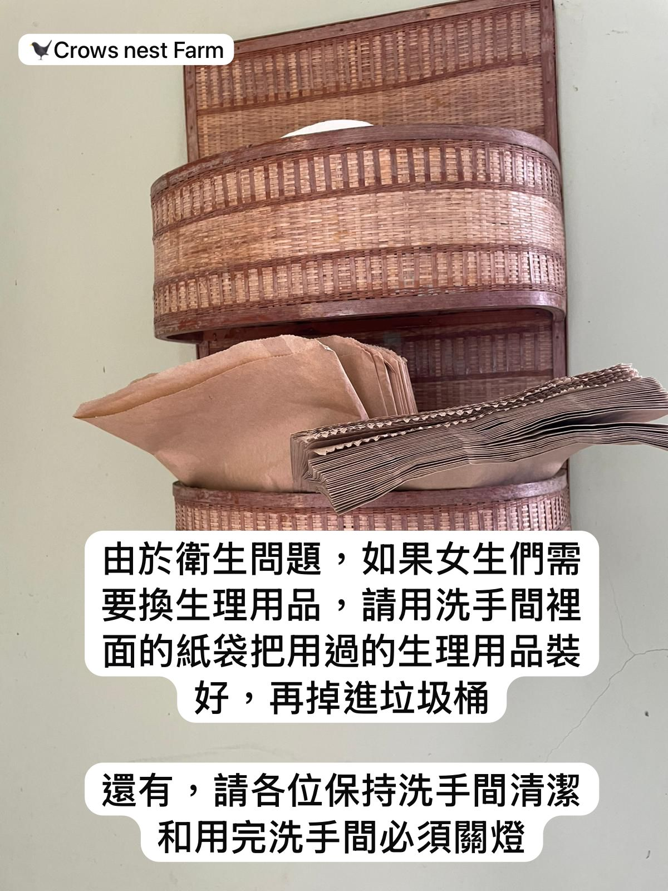
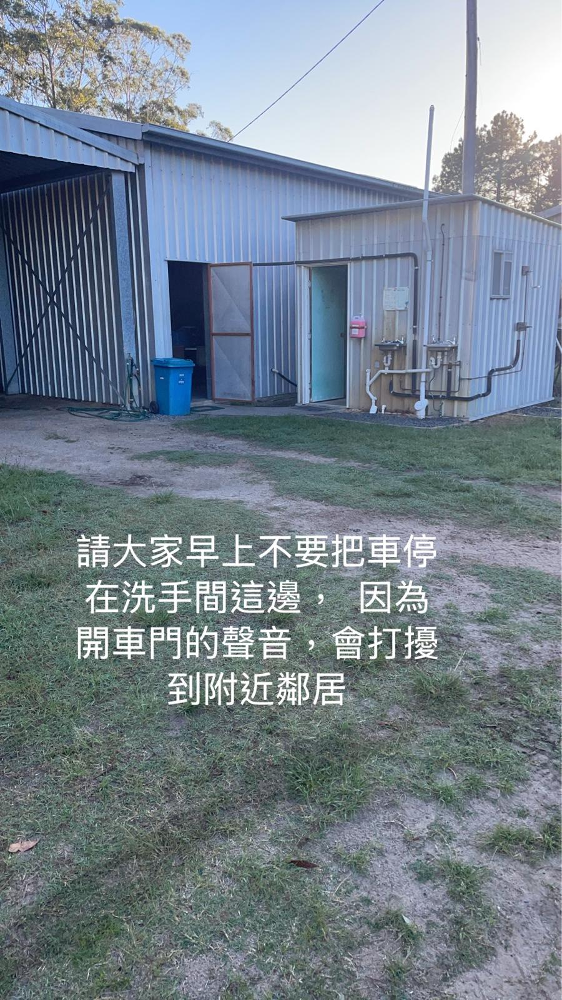
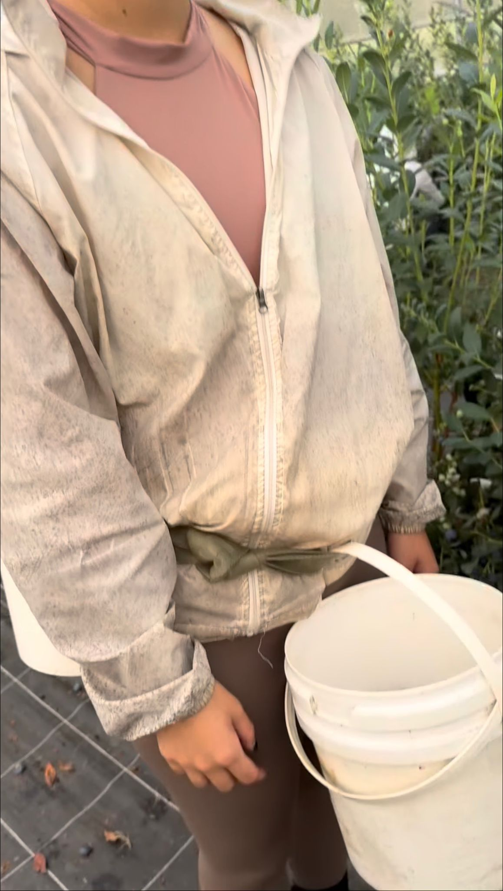
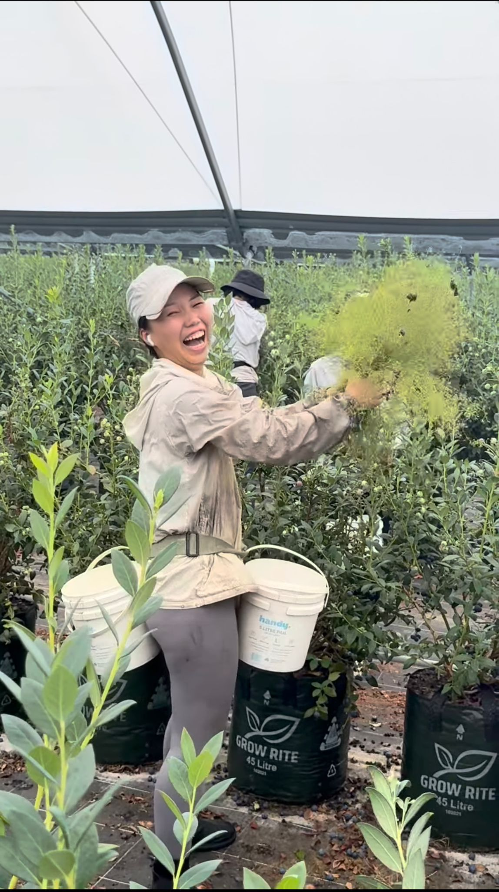
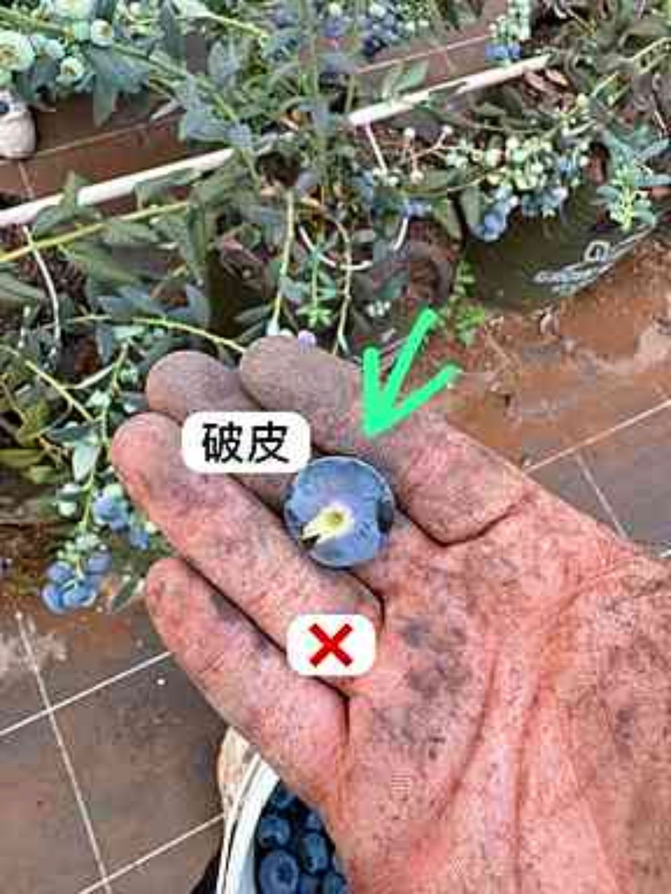
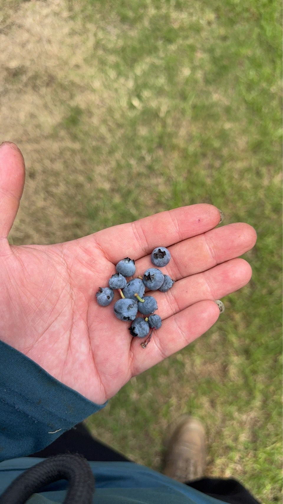
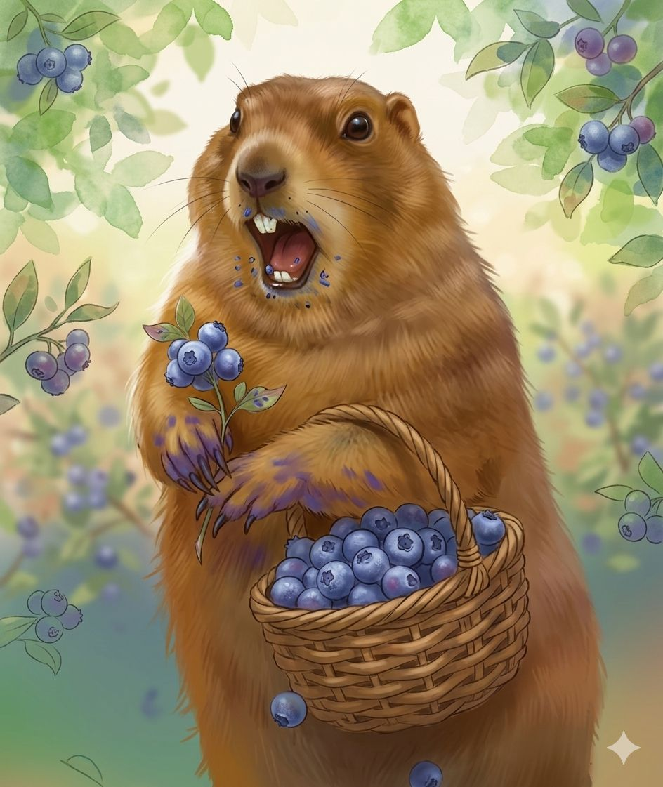

💰 工資和 Payslip 注意事項
- 工資結算週期：星期四 至 下星期三 為一週。
- 發放時間：將於（結算週）的下週一 下午 17:00 前發放完畢。
- 未收到回報：如未收到工資和 payslip，請務必於週一晚上 19:00 分前主動告知管理層。
🚫 違規即時離場守則（請嚴格遵守）
- 禁止坐桶：大家不要坐桶子（即使是自己帶的最好都不要）。
- 吸煙限制：嚴禁在場內吸煙（包括電子煙）。如需吸煙，請務必移步至場外指定區域。
- 交果洗手：每次交果完畢後，請務必清洗雙手。
- 場內禁食：場內禁止進食，且只允許飲用純水（禁止含糖飲料）。
- 休息進食規範：大家在休息時間如需進食，請至場外用餐。重新開始採果前，請務必洗手。
- 嚴禁隨地小便：請絕對不要在場內的草地上隨地小便。
- 耳機配戴限制：如需配戴耳機，請只戴一邊，以確保能聽到現場廣播或其他聲音（例如：叫大家交桶子）。
- 手套規格：嚴禁配戴不符合農場規格的手套（例如：不能使用完全覆蓋手指的手套，必須完全露出所有手指）。
- 禁止戴太陽眼鏡：工作期間不能戴太陽眼鏡，以確保採收品質與辨色。
- 嚴禁損害農場利益：嚴禁做出任何對農場造成風險損失的事情。例如：偷竊（包括藍莓及其他不屬於你的私人財產）、私自關掉農場水系統、破壞農場設備等。
🧺 農場採果規則
- 不要選擇行數，請按順序行數去採果。
- 請 2 人為一組去採果，若只有 1 人，請變為 3 人一組（如有變更，會跟大家說）。
- 在所有行數尚未完成之前，請不要偷採別人的行數的藍莓！
- 若自己的那一行數已完成，請前往（同一區）的新行數去採果。
- 若所有行數都已經有人正在採摘，你將會聽到「Help another」，才去幫其他人的行數去採果。
- 請聽從任何指示，包括採摘的行數及交桶。
- 若有很多人需要洗手時，請排隊，不要插隊。
‼️ 請各位保持和平，如有投訴，請跟管理層說，不要自行處理。
⚠️ 包裝注意事項
- 在開工前（5分鐘）開始做準備工作。
- 包裝前，請記得必須要用酒精搓手液。
- 要戴包裝帽子（包好所有露出的頭髮）。
- 長頭髮的，必須綁起來。
- 手上（不能）戴任何飾物，包括手錶。
- 水瓶要放在休息室。
- 請專心工作，不要聊天，不能戴耳機及不要用手機‼️
- 如藍莓掉在地上，請馬上撿起來掉在垃圾桶。
- 做完包裝，需立即做清潔（包括清洗機器及掃地）。
📋 其他注意事項
- 洗手間衛生問題：如果女生們需要更換生理用品，請用洗手間裡面的紙袋把用過的生理用品裝好，再掉進垃圾桶。
- 節能與整潔：請各位保持洗手間清潔，和用完洗手間必須關燈。
- 早上停車規範：請大家早上不要把車停在洗手方這邊，因為開車門的聲音，會打擾到附近鄰居。

📸 洗手間告示（紙袋與關燈提示）

📸 外部告示（早上切勿在此停車）
🍇 採果技巧與好壞果圖鑑
💡 腰帶使用規範
把藍莓桶連結腰帶上，盡量把它們拉緊，可以令腰部受力轉移到腳部。

📸 腰帶綁法示範一

📸 腰帶拉緊示範二
🚛 交滿桶藍莓地方
把自己滿藍莓的桶交到車上。

📸 交桶上車位置
✅ 好果標準
是全藍、沒有花、沒有樹枝、和沒有破皮膚的才是好果。

📸 標準好果示範一

📸 標準好果示範二
❌ 紅/綠果（嚴禁採摘）
是不能採的，採摘會被警告！！！

📸 不合格紅綠果一

📸 不合格紅綠果二
⚠️ 破皮果實處理
在採摘時如果有發現，請自行食了它解決。如果在桶內過多是會被警告！！在採摘時遇到容易破皮的，請用360度轉動方式採摘。

📸 破皮果實與採摘手法
🚯 鼻屎果（小果）不摘
就是小到有如鼻屎的，自己都不會食的就不要摘了，可以直接跳過。

📸 鼻屎果大小對比
🌟 請大家做個好採手 🌟

👍 優秀採手榮譽榜/示範
🚜 常規農場工作守則
- 請絕對聽從管理人員的合理指示。
- 工作時間內需保持積極、認編的工作態度。
- 請準時到達規定的農場（採果區域）集合，切勿遲到。
- 成績與品質要求：所有人的採收成績與品質均需盡量做到最好。成績欠佳或工作態度欠佳者，將面臨被停工及請離開的風險。